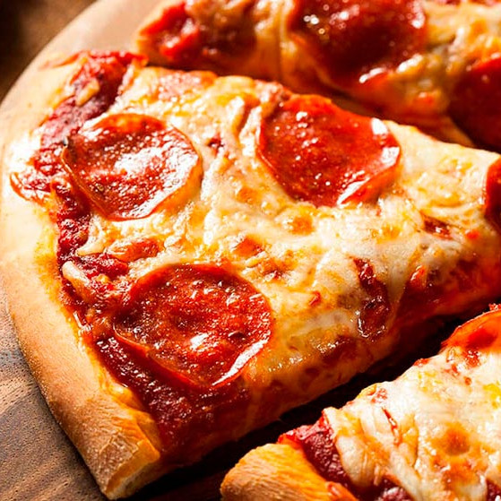
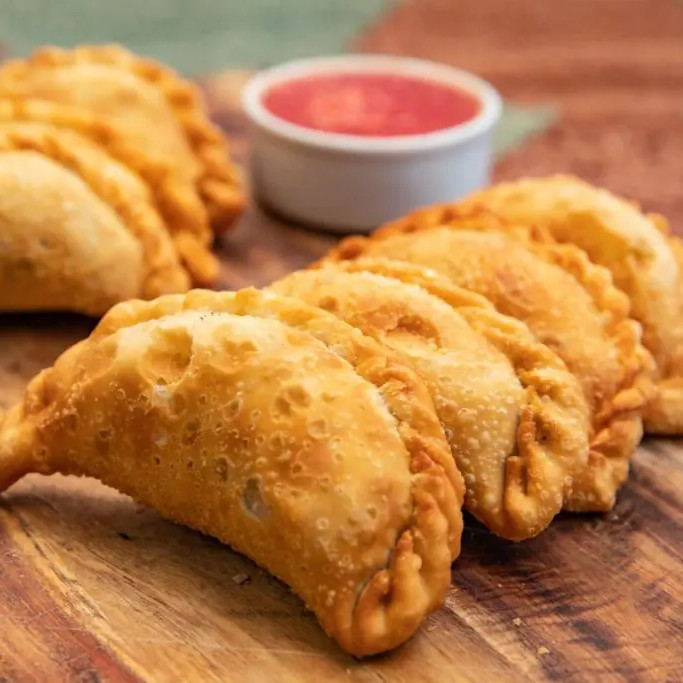
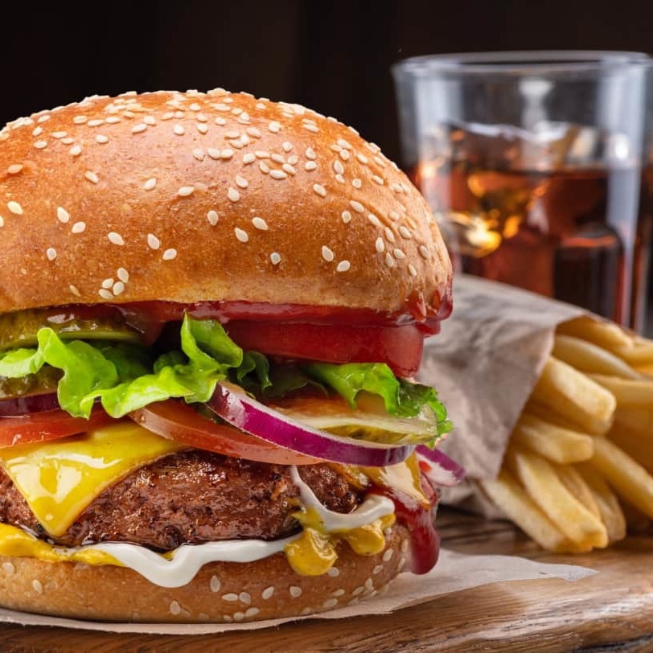
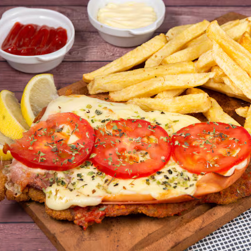

Nuestra carta

Pizza
Nuestra deliciosa pizza posee una masa fresca y hecha a mano todos los días. Ofrecemos una variedad de
ingredientes frescos y sabrosos. Ya sea que prefieras una pizza de queso clásica o algo más aventurero,
como una pizza de pollo a la barbacoa, tenemos algo para todos.
$12.000

Empanada
Nuestras empanadas son un favorito de la multitud. Están hechas con una masa casera y rellenas con una
variedad de ingredientes frescos y sabrosos. Ya sea que prefieras carne, pollo o verduras, tenemos algo
para todos. Nuestras empanadas son perfectas para un almuerzo rápido o una cena informal.
$1.200

Hamburguesa
Nuestras hamburguesas son jugosas y deliciosas, están hechas con carne fresca y se sirven en un pan suave
y esponjoso. Ofrecemos una variedad de ingredientes frescos y sabrosos. Ya sea que prefieras una
hamburguesa clásica o algo más aventurero, como una con champiñones y queso azul, tenemos algo para todos.
$9.500

Milanesa
Nuestras milanesas son crujientes y deliciosas, están hechas con carne fresca y se sirven con una
guarnición de papas fritas y ensalada. Ya sea que prefieras una milanesa clásica con limón o algo más
aventurero, como una milanesa napolitana con jamón y queso, tenemos algo para todos.
$8.900